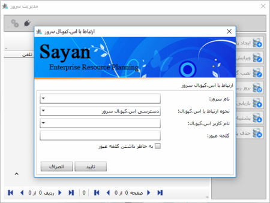

زمانی که نرم افزار سایان را اجراء می کنید تصویر زیر پنجره ی «ایجاد ارتباط» نمایش داده می شود.

پنجره ی ایجاد ارتباط دارای دو تب «ارتباط با پایگاه داده» و«تنظیمات و ارتباط با سرور» می باشد.
در صورتی که پایگاه داده ای از پیش ساخته اید، نام پایگاه داده را از لیست مربوطه آن را انتخاب
و سپس نام کاربر و کلمه عبور را وارد نمایید، با کلیک روی دکمه تایید
وارد صفحه اصلی برنامه خواهید شد.
در صورتی که اولین بار است که نرم افزار را اجرا کرده اید،
برای انجام تنظیمات و ایجاد پایگاه داده، تب
«تنظیمات و ارتباط با سرور»
را کلیک کنید، پنجره ی زیر را مشاهده خواهید کرد:

حال روی گزینه ی «مدیریت سرور» کلیک کنید ، پنجره «ارتباط با اس.کیو.ال سرور» را مشاهده خواهید کرد، در این قسمت چهار فیلد وجود دارد که اطلاعات آن به شرح زیر تکمیل می شود:
نام سرور: در این قسمت نام اس.کیو.الی را که برای کار با نرم افزار به آن متصل می شوید را مشاهده می کنید حال ممکن است از طریق شبکه به اس.کیو.ال متصل شوید و یا اس.کیو.ال بر روی سیستم شما نصب شده باشد.
در صورتی که منوی مقابل نام سرور را کلیک کنید و اندکی صبر نمایید سیستم به صورت خودکار نام سرور را جست و جو می کند.

در صورتی که اس.کیو.الی روی سیستم یا شبکه نصب باشد سیستم آن را پیدا می کند.
نحوه ارتباط با سرور
پس از پیدا کردن سرور می توانید نحوه ارتباط با سرور را مشخص کنید، با کلیک بر روی لیست مربوطه نحوه ارتباط با سرور با دو گزینه«دسترسی ویندوزی» و «دسترسی اس.کیو.ال سرور» قابل نمایش است .«دسترسی ویندوزی» امکان دسترسی فقط از طریق کاربر ویندوز بوده و کاربر محدود می باشد. لازم به توضیح است که این روش دسترسی از امنیت بالایی برخوردار نیست، زیرا هر کاربر ویندوز می تواند به پایگاه داده شما (در صورتیکه دارای پسورد نباشد) دسترسی پیدا کند. اما در دسترسی اس.کیو.ال سروری محدوده ارتباط وسیع تر و فقط مختص به کاربر ویندوز نمی باشد. لطفا گزینه دسترسی «اس.کیو.ال سرور» را انتخاب کنید .
نام کاربر/ کلمه عبورنام کاربر مورد نظرتان را که در زمان نصب برنامه آن را ثبت کرده اید، انتخاب کنید و کلمه عبور مربوط به کاربر را وارد نمایید. فرم تکمیل شده به صورت زیر می باشد:

در تصویر بالا پس از بررسی موارد گفته شده، با کلیک روی دکمه «تایید» صفحه ی زیر را مشاهده خواهید کرد.

در تصویر بالا بعد از وارد کردن کلمه ی عبور صفحه ی مدیریت سرور را مشاهده خواهید کرد این صفحه امکان ایجاد پایگاه داده، ویرایش، بروز رسانی، پشتیبان گیری و حذف پایگاه داده را به شما می دهد برای راهنمایی بیشتر در خصوص صفحه ی مدیریت سرور، راهنمای مربوط به آن را مطالعه فرمایید.